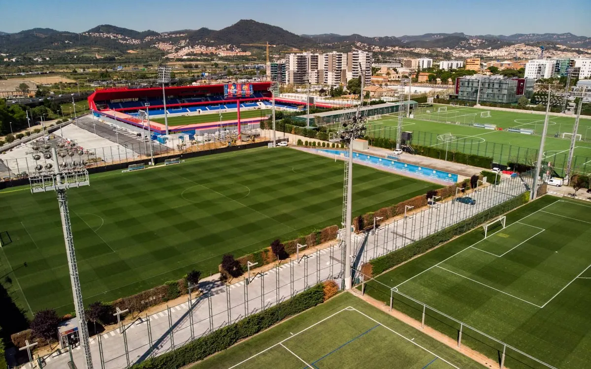
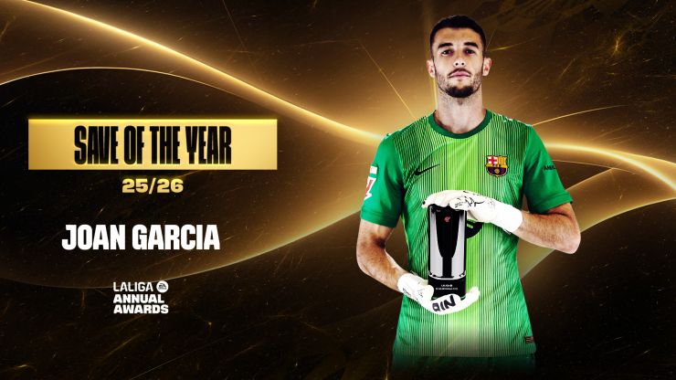
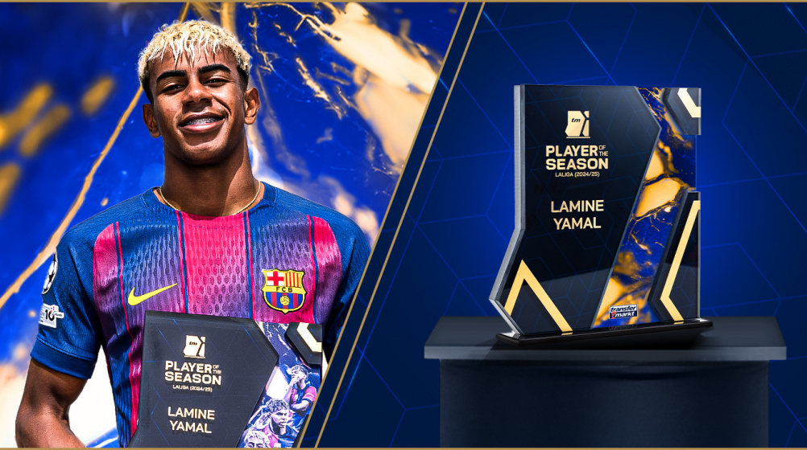
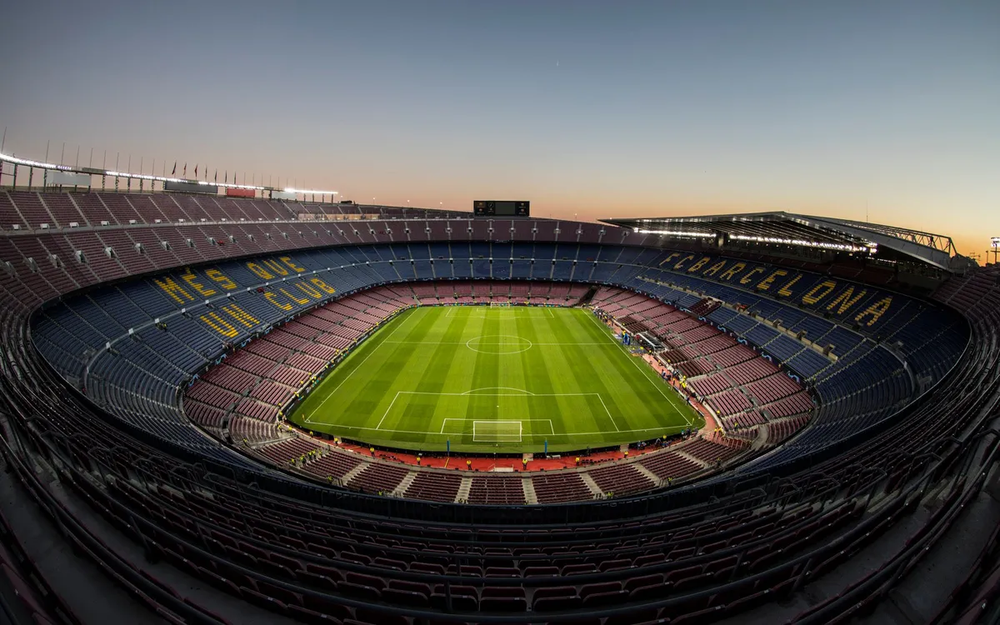

A Season of Goals
Relive the entire 25/26 campaign through its best moments. Creativity, precision, and classic Barça football.
Transfer & Injury Updates
Stay informed on squad changes and player recoveries. Official news on transfers, negotiations, injuries, and return timelines.
Day One: Anthony Gordon
Arrival. Signing. Photoshoot. Gordon’s first day as a Blaugrana begins here.

Preseason to start on July 13
FC Barcelona will begin preparations for the 2026/27 season on July 13, with the first team returning to the Ciutat Esportiva Joan Gamper for medical examinations and fitness tests before the start of training.
Following the summer break, Hansi Flick and his coaching staff will oversee the opening weeks of preseason work at the club's training facilities. The sessions will focus on physical preparation and building momentum ahead of the new campaign.
The squad will then travel to England for a preseason stage at St. George's Park from July 27 to August 3. The renowned training complex, home to the England national teams, provides world-class facilities and has previously hosted Barça during preseason visits in 2014 and 2016.
The stay in England will form an important part of the team's preparations, allowing the players to continue their work in a focused environment as the intensity of preseason increases.
The 2026/27 campaign will mark Hansi Flick's second full season in charge of the first team. The German coach and his staff will use the preseason period to continue developing the squad ahead of the challenges that await in both domestic and European competition.
Further information regarding the team's preseason schedule will be announced through the club's official channels in due course.

Joan Garcia with best LaLiga save
FC Barcelona goalkeeper Joan Garcia has been awarded the LaLiga EA Sports Save of the Season for the 2025/26 campaign, recognition for one of the most memorable moments of his outstanding debut season in Blaugrana colours.
The winning save came during the Catalan derby against RCD Espanyol at the RCDE Stadium on matchday 18. With the score still level at 0–0 in the 38th minute, Garcia produced a remarkable reflex stop to deny Pere Milla from close range, stretching to push the ball away with one hand and preserve the deadlock.
The intervention proved crucial in a tightly contested encounter and quickly became one of the standout moments of the league season. Combining athleticism, positioning, and quick reactions, the save showcased the qualities that made Garcia one of the competition's most reliable goalkeepers throughout the campaign.
The award adds to an impressive list of achievements for the Barça number one, who also claimed the Zamora Trophy after conceding just 21 league goals. His consistency between the posts played a key role in the team's success and established him as one of LaLiga's standout performers.
Congratulations, Joan!

Lamine Yamal, LaLiga player of the season
Another individual honour for Lamine Yamal, who has been named LaLiga EA Sports Player of the Season for 2025/26 following an exceptional campaign in Blaugrana colours.
The La Masia graduate was one of the standout performers in Spanish football, playing a decisive role in Barça's successful league campaign. Week after week, the young forward thrilled supporters with his dribbling ability, creativity, vision, and impact in key moments.
Wearing the iconic number 10 shirt, Yamal finished the league season with 16 goals and 11 assists, the highest combined total in the competition. It was also his most productive campaign to date and saw him share the Zarra Trophy with fellow teammate : Ferran Torres.
His performances throughout the season produced countless memorable moments, from decisive goals to match-winning displays, further cementing his status as one of the brightest young talents in world football.
Congratulations, Lamine!

Building the Future
The transformation of Spotify Camp Nou continues to move forward as part of the Espai Barça project, one of the most ambitious developments in FC Barcelona's history.
The redevelopment is designed to create a world-class stadium while preserving the identity, history, and values that have made the club a global symbol of football excellence for more than a century.
Once completed, Spotify Camp Nou will offer improved facilities for players, members, and supporters, including enhanced accessibility, greater comfort, and cutting-edge technology throughout the stadium.
The project represents a major investment in the future of FC Barcelona, ensuring that the club remains at the forefront of world sport both on and off the pitch. The new stadium will provide a stage worthy of the club's ambitions and the millions of fans who follow Barça around the world.
Every step forward brings the return to Spotify Camp Nou closer, as the club continues to build a home ready for the next generation of Blaugrana success.